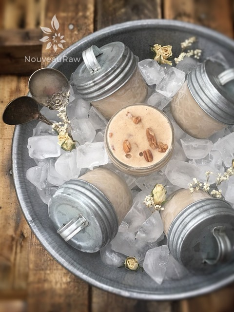
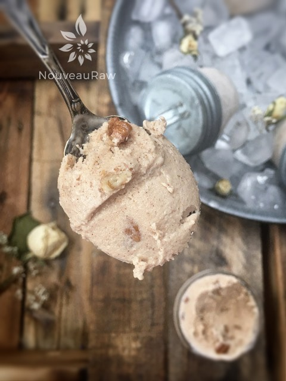
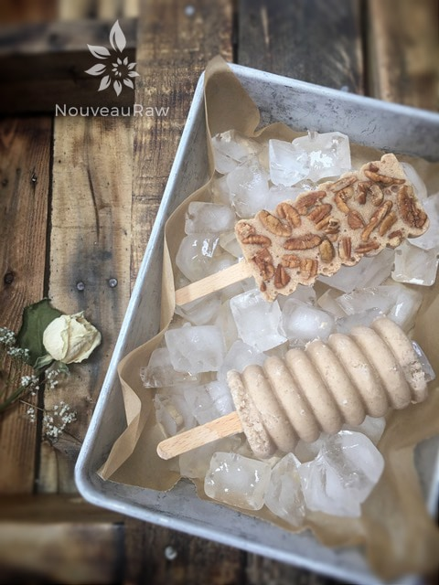
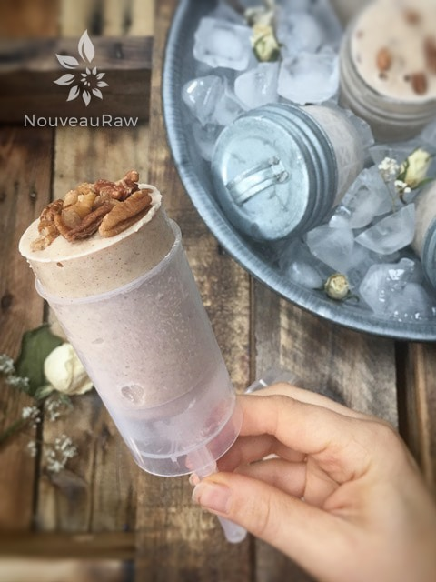

Butter Pecan Ice Cream
~ raw, vegan, gluten-free ~
Butter Pecan Ice Cream is one spoonful after spoonful of buttery pecans folded into a sweet, creamy base to create a delight like no other.
An ice-cream loving friend set me up with a challenge, giving me the perfect excuse to make this batch of butter pecan ice cream. Butter pecan is one of her all-time favorite flavors, and I couldn’t wait to pop into the kitchen to see what I could come up with. The result? She loved, I loved it, Bob loved it, and so has everyone else who has tasted it.
Outside of the delicious buttery flavor, this ice cream doesn’t freeze really hard which was actually a pleasant surprise. It makes it much easier to scoop or spoon out for serving.
Where’s the Butter?
So, you might be questioning the word “butter” in the title. I didn’t use butter… of course, but the soaked pecans and macadamia nuts lend to a buttery flavor once blended. The soaking process shouldn’t be skipped. Number one, it helps to reduce the phytic acid which can be difficult on the digestive system. And secondly, it softens them for blending purposes. That way we can get them smooth and silky.
High-Powered Blender
This guides me to a topic that I wanted to quickly chat with you about. A high-powered blender. If you don’t own one, such as a Vitamix or Blendtec… they are worth the investment. I do realize that they are spendy, but they earn their keep by helping you create successful recipes in the kitchen. Many standard blenders don’t have enough power to blend nuts into a creamy texture, and this is important when creating dairy-free alternatives. Well, I hope you enjoy this recipe. Please comment below and keep in touch. Many blessings, amie sue
yields 4 1/2 cups batter
Preparation:
- In a high-speed blender, combine the almond milk, pecans, macadamia nuts, sweeteners, vanilla, lecithin, and salt. Blend until nice and creamy.
- Due to the volume and the creamy texture that we are going after, it is important to use a high-powered blender. It could be too taxing on a lower-end model.
- Blend until the filling is creamy smooth. You shouldn’t detect any grit. If you do, keep blending.
- This process can take 2-4 minutes, depending on the strength of the blender. Keep your hand cupped around the base of the blender carafe to feel for warmth. If the batter is getting too warm. Stop the machine and let it cool. Then proceed once cooled.
- Place the blender carafe in the fridge or freezer for 1 hour.
- If chilled in the fridge it can stay there for up to 8 hours. But don’t leave it in the freezer for more than an hour or it will freeze solid.
- Once chilled pour the batter into the ice cream maker and follow the manufacturer’s instructions.
- As the ice cream machine is near done, add the remaining pecans, blending just long enough to incorporate them.
- Transfer to your favorite freezer-safe container and place in the freezer overnight.
- It is best to take the ice cream out of the freezer about 10 minutes ahead of time, so it can have a chance to soften.
- Eat within 1 month.
Freezing Suggestions for Ice Cream:
- Use an ice cream machine. Follow manufactures directions.
- Freeze in popsicle molds or 3 oz Dixie cups with a popsicle stick inserted.
- Pour ice cream into a freezer-safe container and occasionally stir as it freezes.
-
- Store the ice cream in the very back of the freezer, as far away from the door as possible. Every time you open your freezer door you let in warm air. Keeping ice cream way in the back and storing it beneath other frozen-sold items will help protect it from those steamy incursions.
- Ice cream is full of fat, and even when frozen, fat has a way of soaking up flavors from the air around it—including those in your freezer. To keep your ice cream from taking on the odors, use a container with a tight-fitting lid. For extra security, place a layer of plastic wrap between your ice cream and the lid.
- To soften in the refrigerator, transfer ice cream from the freezer to the refrigerator 20-30 minutes before using. Or let it stand at room temperature for 10-15 minutes.

There are so many wonderful ways to package your ice cream. One of my favorite ways in small freezer-safe mason jars. They help with portion control, no additional dishes need to be dirty upon dishing it up, and there is less air exposure which helps to decrease ice crystals from forming.


Next, to the jar method, I love taking ice cream batters, dividing it up, and creating many other fun ways to enjoy it. This is a great mold (link above) that gives a popsicle more of a sophisticated look.

Then there are the good ole push pops. I loved this style when I was growing up. Except back then the push pop container was made of disposable paper/cardboard. These are reusable and create less waste in our landfill.
© AmieSue.com